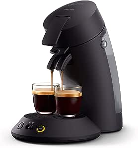

Découvrez les composants de la Senseo et comment les réparer
La Senseo est bien plus qu'une simple machine à café. Dans cet article, nous explorerons ses composants essentiels et vous donnerons des astuces pour les réparations.

Composants essentiels :
- Carte électronique de contrôle : La carte électronique est le cerveau de la Senseo, gérant toutes les opérations.
- Boutons de contrôle : Ils permettent de personnaliser votre café en ajustant la taille de la tasse et la force du café.
- Capteurs thermiques : Ils garantissent une infusion parfaite en mesurant la température de l'eau.
- Pompe à eau : Elle assure un acheminement optimal de l'eau pour une extraction parfaite.
- Élément chauffant : Il chauffe l'eau à la température idéale pour un café toujours chaud.
- Relais et interrupteurs : Ils régulent l'alimentation pour un fonctionnement sûr et efficace.
Conseils de réparation et d'entretien :
- Nettoyage régulier : Maintenez votre Senseo propre pour une performance optimale.
- Remplacement des pièces défectueuses : Changez les pièces défectueuses pour éviter les problèmes.
- Consultez la FAQ : Trouvez des solutions rapides aux problèmes courants dans notre FAQ.
Conclusion :
Comprenez les composants de votre Senseo et prenez-en soin pour profiter d'un café délicieux à tout moment.